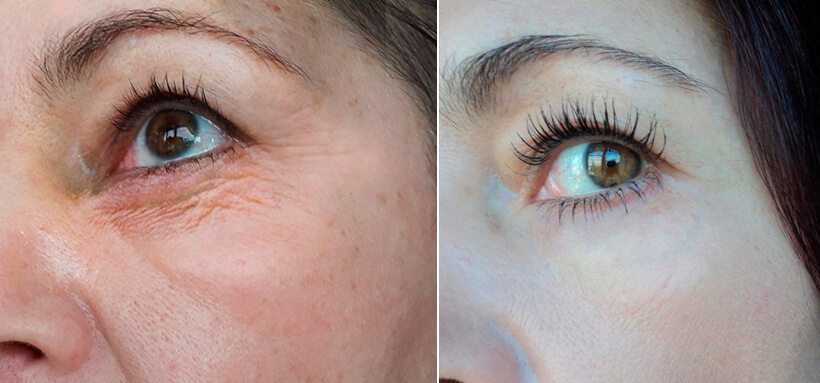
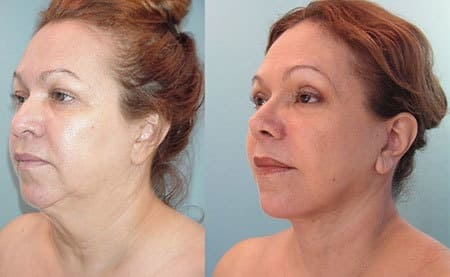

Medicină în România 2020
Servicii de sănătate
Ca urmare a unui incident ciudat de pe aeroportul din București, publicul a aflat despre un produs revoluționar în domeniul întineririi tenului, creat de o fată obișnuită din România pentru mama ei, care începea să îmbătrânească
Această poveste incredibilă s-a petrecut recent, la aeroport. Atunci când au verificat biletul de avion pentru zborul București-Paris, agenții vamali au reținut o femeie de 45 de ani. Potrivit raportului unuia dintre reprezentanții legali, au observat o diferență majoră între fotografia femeii din pașaport și fața ei.
În pofida tuturor încercărilor femeii de a dovedi că ea este cea din pașaport, deși le-a explicat că fața ei s-a schimbat deoarece, cu câteva săptămâni înainte de zbor, a început să folosească un ser de întinerire dezvoltat de fiica ei - studentă la universitate, angajații aeroportului nu au crezut-o și au reținut-o pentru a clarifica situația.
Acționăm conform instrucțiunilor. Fotografia din pașaport reprezintă o persoană complet diferită; titulara pașaportului arată cu 15 ani mai tânără decât în fotografie. Ceea ce mi s-a părut și mai suspect a fost că pașaportul a fost eliberat recent, cu aproximativ o lună în urmă. Din câte știu, chiar și cu operație plastică, este imposibil să obții un asemenea rezultat atât de rapid. Din acest motiv am avut suspiciuni.
Amalia Badea (agent aeroport
București)
Însă, se pare, chiar există un produs care poate oferi rezultate atât de rapide fără operație! Iar creatoarea produsului este o studentă obișnuită din România, care a vrut să-și ajute mama să-și recapete frumusețea și tinerețea.
Bună ziua, Alina Ionescu! Spune-ne cum ai reușit să creezi acest produs de întinerire care este atât de eficient, încât mama ta a avut probleme cu pașaportul la aeroport?
Știți, acest produs a fost creat pentru mama mea, care m-a crescut și a muncit din greu pentru a mă susține cu educația... Acum câțiva ani, tata a murit. Evident, nu prea vreau să-mi amintesc acele momente. Mama m-a crescut singură... A fost greu, avea două locuri de muncă pentru a mă putea ține la școală. Mulți ani, s-a chinuit singură să-mi ofere tot ce aveam nevoie. Vă puteți imagina ce greu i-a fost? Stresul constant și responsabilitatea i-au distrus sănătatea. Are doar 45 de ani, dar părea mult mai bătrână. Evident, a pierdut atenția bărbaților și a suferit în singurătate. La această vârstă, e destul de dificil să-ți refaci viața personală.
Încerci să o ajuți?
Bineînțeles, cum aș putea să mă uit liniștită cum se ofilește?! La urma-urmei, la 45 de ani, nici măcar nu este atât de bătrână! La această vârstă, o femeie poate începe să trăiască pentru ea, având o viață personală fericită! Eram atât de motivată să o ajut pe mama mea, încât am decis să caut un produs de reîntinerire, pentru a-i reda frumusețea și încrederea. Însă nu am găsit nicio cremă bună pentru întinerire, nici la farmacie, nici în saloanele de înfrumusețare sau pe internet.
Și ai decis să dezvolți propriul produs?
Da, pentru că sunt studentă la Farmacie și voi absolvi în curând, devenind specialist cu diplomă. Deci, am capacitatea și cunoștințele necesare. Am folosit doar ingrediente naturale pentru produsul meu.
Primul rezultat este uimitor! Ca dovadă, uitați-vă la mama mea. Excursia la Paris a fost cadoul meu de ziua ei. Am reușit să economisesc niște bănuți pe care i-am câștigat la locul de muncă part-time și am decis să-i fac o bucurie, cu o călătorie scurtă, în care să se odihnească, să se relaxeze și poate chiar să cunoască pe cineva. Este primul ei zbor în străinătate și și-a făcut pașaportul cu doar o lună și jumătate înainte de zbor. Imaginați-vă cât de mult a întinerit-o produsul meu în tot acest timp, încât agenții vamali nu au crezut că este ea în fotografie! Efectele serului de întinerire m-au surprins chiar și pe mine, însă, credeți-mă, este o surpriză foarte plăcută. Datorită cremei mele, mama arată tânără și atrăgătoare, iar acest lucru este foarte important pentru o femeie.
Produsul meu netezește rapid ridurile, chiar și la o vârstă înaintată, tonifiază pielea în mod natural și elimină pungile de sub ochi - este o rețetă pentru întinerire. După ce am văzut primele rezultate, am decis să-mi patentez formula și noroc că am făcut asta la timp! După ce am primit patentul, telefonul a început efectiv să fie bombardat de apeluri și mesaje de la reprezentanții companiilor farmaceutice vestice. Toți îmi propuneau să le vând rețeta și să le transfer drepturile de autor pentru această cremă de întinerire.
Dar nu ai acceptat oferta, nu-i așa?
Bineînțeles că nu. Am creat produsul de întinerire pentru mama mea, nu pentru profit. Vreau ca și alte femei obișnuite, care nu au sute de mii de dolari pentru proceduri de întinerire și operații, să își poată redobândi frumusețea și tinerețea. Așa văd eu lucrurile și nu-mi pot încălca principiile.
Cum ai reușit să gestionezi producția? Evident, sunt necesare fonduri generoase.
M-a ajutat directorul universității. Împreună cu laboratorul nostru și Institutul de Știință și Cercetare, am reușit să producem serul pentru întinerire chiar aici. Și chiar mi-a sugerat și un nume drăguț pentru produs - .
Produsul Alinei Ionescu este cu adevărat unic. Ingredientele și proporția potrivită au condus la crearea unui adevărat miracol în domeniul întineririi pielii. Când am realizat primul test clinic, rezultatele au surprins întreaga lume științifică!
nu prezintă niciunul dintre dezavantajele pe care le au cele mai scumpe soluții, care au efecte secundare și contraindicații și, cel mai important - oferă doar efecte temporare. oferă rezultate excelente la orice vârstă și poate fi utilizat fără restricții. Testele clinice au arătat că până și femeile de peste 65 de ani pot să scape rapid de riduri, de uscăciune și piele lăsată. este eficient și în prevenția modificărilor legate de vârstă pentru femeile de 20 de ani. Serul hrănește perfect pielea și o protejează mulți ani de îmbătrânirea prematură.
Pot spune cu încredere că, în prezent, nu există niciun alt produs pentru întinerirea pielii care să se ridice la nivelul acestuia.
Robert Sorescu (cercetător senior la laboratorul Universității de Farmacie)
Atunci când am încercat să vindem produsul nostru în farmacii, ne-am confruntat cu opoziția companiilor mari. Nimeni nu vrea să distrugă piața vânzând un produs atât de ieftin. S-a demonstrat în mod obiectiv că este cel mai un produs de întinerire dintre toate cele existente. Din nefericire, vânzarea unor produse atât de eficiente precum acesta nu se încadrează în planurile rețelelor farmaceutice. Pentru farmacii, cel mai important este să facă profit.
Am luat o decizie fermă - să respingem propunerile lor și să vindem la prețul dorit de noi. Astfel, putem vinde această cremă pentru întinerire la un preț minim.
George Manea (Directorul Institutului de Știință și Cercetare)
Am întâlnit-o pe mama Alinei Ionescu, care își amintește acum amuzată de incidentul de la aeroport.
Cu siguranță vă puteți imagina ce încântată sunt că agenții vamali de la aeroport nu au crezut că eu sunt cea din poză! Sincer, nici măcar faptul că am întârziat în excursia la Paris nu mi-a stricat buna dispoziție din ziua respectivă. Îi sunt foarte recunoscătoare fiicei mele pentru acest cadou minunat. Este un miracol pentru mine!
Fiica dvs. a spus că ați motivat-o să inventeze .
M-a impresionat. Îmi amintesc când mi-a adus primul flacon cu acest ser pentru întinerire. Atunci, nu era vorba despre producție - a fost pur și simplu un cadou dezvoltat și creat de ea, cu mâinile ei. Am plâns de emoție. Îi sunt foarte recunoscătoare...
Cât trebuie să aștepți pentru a vedea primele rezultate?
Aproximativ o lună! Din momentul în care am primit cadoul și până în ziua zborului spre Paris, am folosit crema zilnic și am fost surprinsă de rezultate. Am devenit cu 15 ani mai tânără! Puteți vedea chiar voi asta!
Și nu mă refer doar la frumusețe și aspectul exterior. Viața mea s-a îmbunătățit. Am început să am mai multă încredere în mine. Cei din jurul meu au început să se poarte mai frumos cu mine, acum, viața mea este mult mai colorată! Am devenit mai tânără nu doar în exterior ci și în interior! Viața mea personală a devenit mult mai interesantă, bărbați mult mai tineri decât mine au început să mă abordeze! Acum, mă simt cu adevărat fericită ca femeie și, da, am un iubit. Nu voi spune câți ani are, dar este mai tânăr decât mine.
Apropo, ultima dată când am mers în vacanță am ratat zborul din cauza incidentului cu pașaportul. Însă am mers recent în vacanță cu iubitul meu tânăr! Și toate acestea datorită fiicei mele și produsului ei miraculos, . Ce bine că acest ser pentru întinerire va fi produs în România și va ajuta multe femei să devină mai frumoase și mai tinere!
Trebuie să menționăm că a trecut de toate testele clinice necesare și poate fi comandat și livrat pe tot teritoriul României. Însă, văzând succesul acestui produs nou, au apărut multe produse contrafăcute pe piață. În plus, rețelele farmaceutice și companiile farmaceutice mari se opun în continuare vânzării acestui produs nou și creează multe site-uri false, care vând produsul la prețuri mult mai mari.
Am decis să distribuim chiar noi produsul, fără să implicăm farmaciile. În prezent, vindem direct către clienți. Nu utilizăm intermediari, precum farmaciile comerciale. Am discutat mai multe opțiuni și ne-am axat pe cea mai eficientă. Dacă doriți să cumpărați la reducere, completați formularul de pe website-ul furnizorului. Operatorul nostru vă va contacta pentru a vă răspunde la întrebări și pentru a confirma detaliile comenzii. Apoi, comanda dvs. va fi livrată. Pe website-ul furnizorului, puteți plasa o comandă pentru produs, la preț promoțional. Aproape toată lumea are acces la internet acum. Chiar dacă unii nu au calculator, probabil au un smartphone cu acces la internet. Grăbiți-vă, oferta este limitată.
Dacă plasați comanda înainte de veți putea cumpăra cu REDUCERE MAXIMĂ. Scopul acestei promoții este de a atrage atenția publicului asupra acestui produs. Sperăm să obținem efectul „din vorbă în vorbă”, deoarece credem că oamenii vor începe să recomande produsul prietenilor și familiei.
Care este prețul obișnuit al produsului?
Costul de producție este de aproximativ 600 / cutie. Însă oferim reduceri atrăgătoare, astfel încât să-l poată cumpăra toată lumea. Reducerea este de până la 50%. Din fericire, producătorul înțelege importanța disponibilității acestui produs pentru toți cetățenii țării, nu doar pentru câțiva oameni. Promitem să nu vindem formula în străinătate, să nu exportăm produsul și să-l vindem doar în România.
Actualizare : este disponibil în prezent în orașul și regiunea dvs., reducerile sunt valabile până la .
Dacă plasați comanda înainte de veți putea cumpăra cu REDUCERE MAXIMĂ.
Un remediu miraculos!!! Și eu îl vreau. Nu m-aș supăra nici dacă aș pierde 10 zboruri!
Care este problema? Comandă și devino iar tânără!
Am comandat deja. Iată rezultatul!
Rezultatele sunt uimitoare!
Cel mai important este că transformarea are loc din interior. La început, tenul tău își recapătă tinerețea, apoi, viața începe să fie umplută de o mulțime de emoții și fericire din nou, iar acest lucru nu poate fi exprimat în cuvinte!
Sunt perfect de acord! După ce am folosit serul , soțul a început să fie interesat din nou de mine, retrăim anii tinereții, facem sex mai des decât acum 20 de ani!
Iată fotografia mea. Acum îmi e rușine de cum arătam!

Sunt de acord! Serul acționează eficient și elimină imperfecțiunile tenului - toate au dispărut - ridurile și pielea lăsată. De la prima utilizare, se pot vedea deja rezultatele.
Am 53 de ani, credeți că mă poate ajuta această cremă? Am foarte multe ridurile adânci
Vă va ajuta. Acest produs este mult mai bun decât orice altceva am încercat.
Serul este o minune! Iată rezultatele mele
Cât timp durează până când are loc o asemenea transformare?
Sunt atât de fericită că am aflat despre această cremă! S-au schimbat multe lucruri în viața mea. Acum sunt din nou fericită, vă mulțumesc!
Acum, cei din jur îmi spun că par mai tânără de 30 de ani, incredibil! Mai demult, îmi era rușine de felul cum arătam, acum, îmi este rușine să spun că de fapt am 43 de ani :)